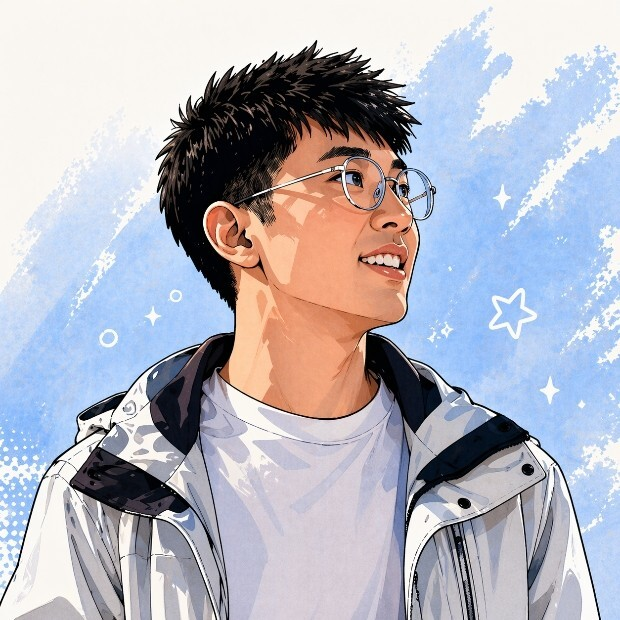
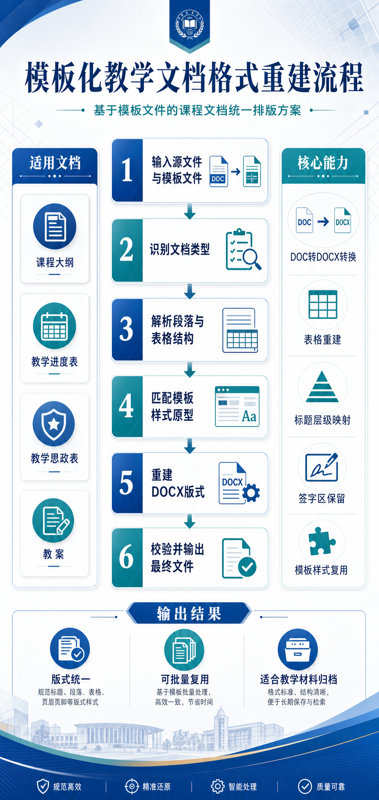

原子君
Atom Wang
从一个不会写代码的设计老师，到用 AI 编程带 68 个学生搭网站 —— 我是怎么掉进 CodeX 这个坑的。
怎么入门 Codex 的
从第一个小项目说起。不是"学"，是直接用。
第一次打开 CodeX
开学那会儿，课排得满，教学材料一堆。最头疼的是改格式——每份材料都要按模板调，反复对齐、调字体、改间距，烦得要死。
我就想：能不能让 AI 帮我按模板把格式全改好？试了 CodeX——还真行。当时特别兴奋，以前改格式改到崩溃的事，几分钟就搞定了。
之前也试过 TRAE、秒哒、Coze、Claude Code，还折腾过 Dify 和 RAGFlow 的工作流和知识库。但 CodeX 那次，是真的把痛点打穿了。后边我就用它做了三维模型展示网站，然后——教学生。
现在？丢给 AI，我专心想教学内容。"

用 AI 编程做过的东西
我目前在做什么
三条线，一个方向 —— 让 AI 真正落到教育和产业里。
一个春季学期
在 5 门课里全面嵌入 AI 技术。
课程体系
每门课都以真实项目驱动，每位学生独立产出可交付成果。
项目先导课 — 北港岛文旅策划 · AI 全流程 · 32课时
效果图增强 — AI 绘图+3D漫游+短视频 · 16课时
数字校园 — 3D 建模+AI 编程+网站部署 · 16课时
宿舍改造 — AI 角色分析+空间设计+3D · 32课时
论文文献综述 — AI 辅助学术写作 · 12课时
方案能不能落地，靠人的判断。"
或学生作品集截图
我目前在推进的方向
我在找 什么样的人
产教融合 — 有项目想用 AI 试试的，来聊。
课程合作 — 想一起开发 AI+专业教学方案的，来聊。
AI 搭子 — 在海口、做 AI、想一起搞点事的，来聊。
原子君 / Atom Wang
AI 教育实践者 · 海经院城乡规划教师
WECHAT 18065175091
OFFICIAL ACCOUNT 原子君的AI工作坊
VIDEO CHANNEL 原子君的AI实战笔记